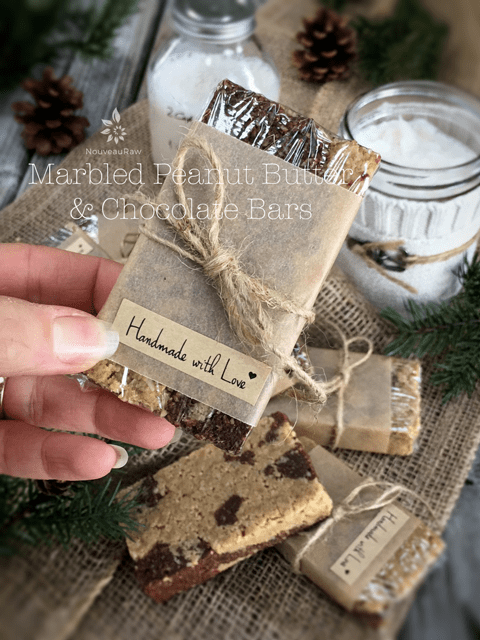
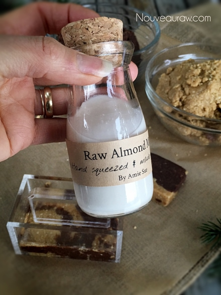
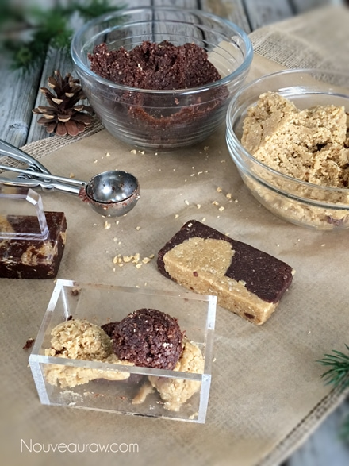
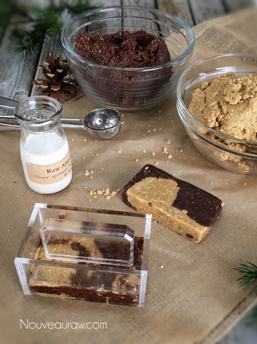
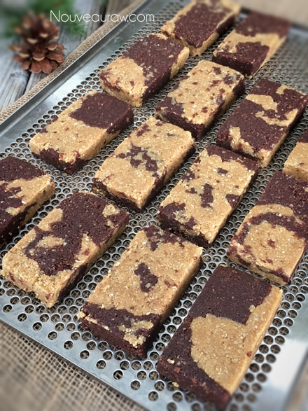

Marbled Peanut Butter and Chocolate Bars

~ raw, vegan, gluten-free ~
What can possibly go wrong when you marble together peanut butter and chocolate?! Nothing… that’s what could go wrong… absolutely nothing. We all know that they are a match made in the culinary heavens.
When it comes to making bars, I love my “cookie” press. Truth be told, it is sold as a sushi press. How I ever stumbled upon it in the first place is beyond me, especially when I don’t eat sushi. But I tend to look at things, trying to figure out how I can use them other than what they were intended for, this is one of those times.
I have been using the press for years, and it helps to create the ideal shape and condenses it into a very firm bar, which is just about perfect. On Amazon, they cost less than $1.00, and shipping usually runs $4.99. Go figure. But it has become a staple tool in my kitchen for $5.99.
When I am creating raw goodies, I am always thinking of fun ways to either present or package them. They make such beautiful gifts.
Since these bars can be kept at room temperature for a week or so, I thought it would be fun to wrap them individually with plastic wrap. I then cut some parchment paper to create a band around the center of the bar. I wanted the ends to poke through so a person could see the lovely coloring of the two doughs.
And then there’s twine, who doesn’t love twine? When I give gifts to my lady friends, I make a bow with the twine, but for men, I tie it in a knot. I picked up the “Handmade with Love” stickers at a local craft store. They also come in handy to help personalize a gift.
Before I let you go, I want to run through a few ingredients. When it comes to the almonds and oats, I suggest that you soak and dehydrate them first. Don’t use them in their soaked only state. It will mess up the texture of the bar. I realize this process adds some time to the process. It’s a good habit to get into, to soak and dehydrate nuts, seeds, and grains ahead of time. That way, they are ready to go with inspiration hits you.
Some of you may be asking if you can skip this process, and the answer is yes, but again, I wouldn’t. This whole pain-in-the-biscuit step can help reduce digestive issues. So for those of you who are dealing with a compromised digestive track… soak and dehydrate and see if makes a difference for you.
I chose to use olive oil instead of coconut oil because some people feel that dehydrated coconut oil leaves a bad taste in their mouths. I usually don’t detect this, but I like to mix things up anyway. As far as sweeteners go, use whatever suits you. Everyone has a different opinion on what works for them. Personally, I used maple syrup and honey. These days, I think that maple syrup is more healthy than agave. The two different sweeteners help with the binding of ingredients and add a layer of complexity to the overall flavor of the bar.
Lastly, the peanut butter I used is fresh ground roasted peanut butter. Raw peanuts have a unique flavor; not much like you would imagine it to be. They are also hard to find. If you want to keep the bar as raw as possible, feel free to make your own raw peanut butter. Ok, now it’s time to get some dishes dirty and make these bars. Please comment below and have a blessed day, amie sue
yields 15 bars
Chocolate batter:
- 2 1/2 cups raw almonds, soaked & dehydrated
- 1/2 cup ground flax seeds
- 1/2 cup raw cacao powder
- 1/3 cup cold-pressed olive oil
- 1/3 cup water
- 1/3 cup raw agave nectar or maple syrup
- 1 Tbsp vanilla extract
Peanut Butter Batter:
- 3 cups gluten-free, rolled oats, soaked & dehydrated
- 1 tsp Himalayan pink salt
- 1 cup natural peanut butter
- 1/2 cup raw agave nectar or maple syrup
- 1/4 cup raw honey or raw coconut nectar
- 1/4 cup + 1 Tbsp raw cold-pressed coconut oil
- 1 1/2 tsp vanilla extract
Preparation:
Chocolate batter:
- Place the almonds in the food processor, fitted with the “S” blade. Process until the almonds turn into a mealy flour.
- Add the ground flax and cacao powder pulsing just until combined.
- As the food processor is running, add in the oil, water, sweetener, and vanilla. Process until well blended.
- Place in a bowl and set in the fridge while you make the other layer.
Peanut Butter Layer:
- Place the raw oats and salt in the food processor and process until it becomes a fine powder.
- Add the peanut butter, sweeteners, honey, oil, and vanilla. Process until the batter sticks together when pinched.
- This batter doesn’t require any fridge time, unlike the chocolate batter.
- Place in a bowl and set aside.
Assembly:
Cookie press method:
- Loosely piles small doughs ball of the two flavors in the cookie press, alternating flavors.
- Press down firmly with the plunger of the cookie press.
- Remove and place on the mesh sheet that comes with the dehydrator.
- Dehydrate at 145 degrees for 1 hour, then reduce to 115 degrees (F) and continue the dehydration process for roughly 8 hours.
- Store in an airtight container.
- On the counter for 1-2 weeks.
- In the fridge, 2-3 weeks.
- In the freezer, 1-3 months.
Pan method:
- In a rectangle-shaped baking pan (make sure it has edges), loosely crumble the two doughs together, intermixing the flavors.
- Take another pan and press down onto the dough, pressing it into a sheet of solid dough. Cut into desired shapes and sizes.
- Remove and place on the mesh sheet that comes with the dehydrator.
- Dehydrate at 145 degrees for 1 hour, then reduce to 115 degrees (F) and continue the dehydration process for roughly 8 hours.
- Store in an airtight container.
- On the counter for 1-2 weeks.
- In the fridge, 2-3 weeks.
- In the freezer 1-3 months.
The Institute of Culinary Ingredients™
- To learn more about maple syrup by clicking (here).
- Click (here) for my thoughts on raw agave nectar.
- Raw honey isn’t vegan, but I still use it now and again. Read (here) why I like to.
- What is raw cacao powder?
- What is Himalayan pink salt, and does it matter? Click (here) to read more about it.
- Is coconut butter the same as coconut oil? Click (here) to find out.
- Are oats gluten-free? Yes, read more about that (here).
- Are oats raw? Yes, they can be found. Click (here) to learn more.
- Do I need to soak and dehydrate oats? Not required but recommended. Click (here) to see why.
- Learn how to grind flax-seeds for ultimate freshness and nutrition. Click (here).
Culinary Explanations:
- Why do I start the dehydrator at 145 degrees (F)? Click (here) to learn the reason behind this.
- When working with fresh ingredients, it is essential to taste test as you build a recipe. Learn why (here).
To things off right… make yourself some almond milk because
when creating a treat like this… it is required. :)

Alternate the dough in the cavity of the press.

With firm and even pressure, press down on the handle.

Remove and place on the mesh screen that comes with the
dehydrator. I found it helpful to wash the cookie press a
few times while making all of these to prevent sticking.

© AmieSue.com